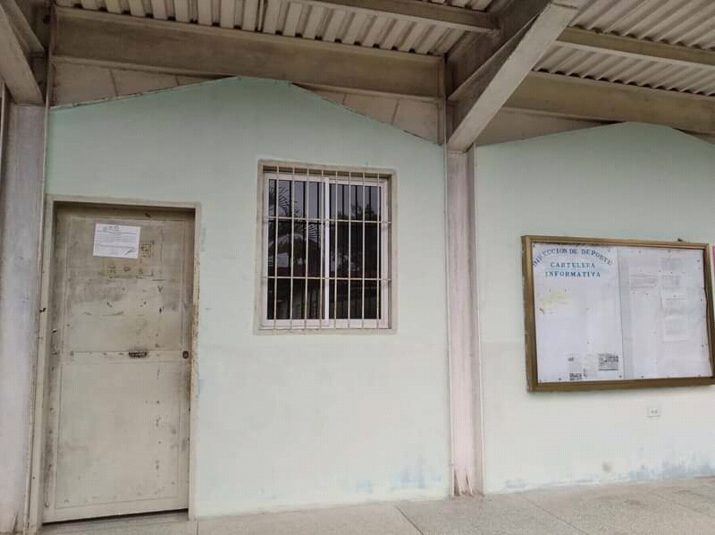

Deporte en la UTDFT
Encuentranos
La dirección de deporte se encuentra en el lado este de la universidad, en edifico de ladrillos verdes, entre las escaleras y la cartelera informativa. Aqui sera atentido directamente por la directora del departamento
 La dirección de deporte se encarga de organizar los eventos deportivos a nivel institucional, interinstitucional, gremial y estadal.
La dirección de deporte se encarga de organizar los eventos deportivos a nivel institucional, interinstitucional, gremial y estadal.
Contamos con entrenadores graduados en educación fisica capacitados para instruccional a los estudiantes y alentarlos a ser mejores atletas.
Ofrecemos la oportunidad a los estudiantes de estimular su rendimiento atletico en nuestras instalaciones deportivas.
Inscribete en alguna disciplina
La dirección de deporte le da a los estudiantes la oportunidad de inscribirse en cualquiera de estas disciplinas y desarrollar su potencial atletico

Ajedrez
Atletismo
Baloncesto

Beisbol

Futbol
Judo
Karate
Kickingbol

Levantamiento de Pesas

Lucha
Natacion
Tenis de Mesa
Volebol
Hay una gran variedad de disciplinas disponibles.
Si deseas formar parte de nuestro grupo de atletas solo debes dirigirte ante la Dirección General de Deporte para gestionar tu inscripción y posteriormente iniciar tus entrenamientos en cualquiera de los espacios asignados para ello.